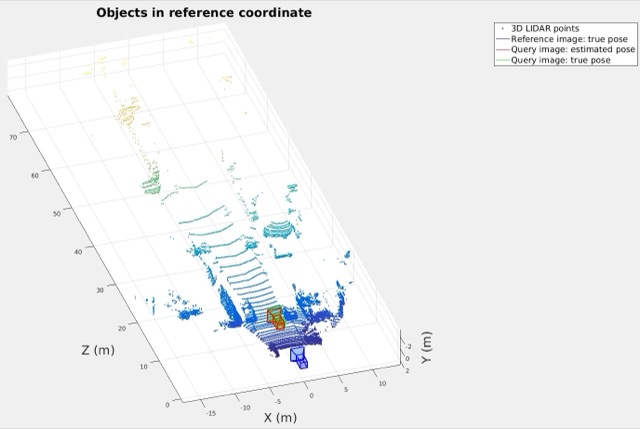
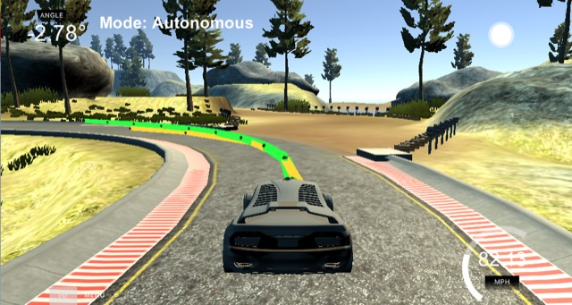
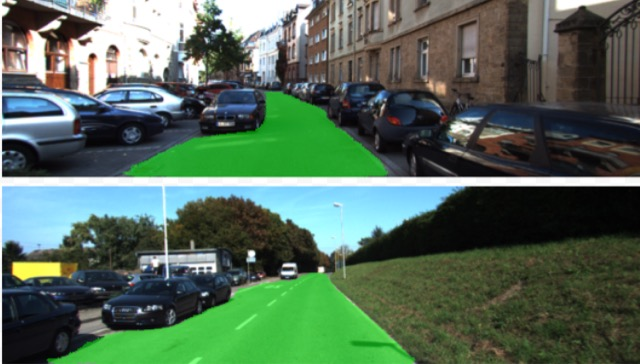

Vision Language Action Model & World Model
Learning-based driving systems, world representations, and the connection between linguistic reasoning and safe trajectory planning.
Autonomous Driving & Physical AI
Technical Expert at ZenseactGothenburg, Sweden
I lead research initiatives at Zenseact to build long-term competence in end-to-end driving. My work connects geometric and learning-based approaches to localization, online mapping, and scene understanding for autonomous vehicles. Previously, I worked in computer vision at Nokia Research in Finland and hold a Ph.D. in Computer Vision.
Host joint Master Thesis projects together with University of Cambridge, TUM, and KTH in the topics of 3D grounded world model.
Beyond Chamfer Distance: Granular Order-Aware Evaluation Metric for Online Mapping — NeurIPS 2026.
Gave an opening keynote at the ECCV WMEAI Workshop: “What Should a World Model Represent in Autonomous Driving?”
OpenCVL: An Open, Diverse, and Large-Scale Dataset for Fine-Grained Cross-View Localization — is presented as a spotlight in ECCV 2026.
QueryOcc: Query-Based Self-Supervision for 3D Semantic Occupancy — is presented in CVPR 2026.
B2F-Map: Crowd-Sourced Mapping with Bayesian B-Spline Fusion — is presented in ICRA 2026.
Safe-VLA project got funded by Vinnova FFI, and this project will host an industrial PhD student in collaboration between Zenseact and Chalmers.
Invited talk at TU Delft’s Intelligent Vehicles Lab: “Engineering Physical AI for Autonomous Driving.”
Learning-based driving systems, world representations, and the connection between linguistic reasoning and safe trajectory planning.
Building and evaluating maps, fusing crowdsourced observations, and localizing vehicles in complex road environments.
Geometric and semantic representations, multimodal learning, and self-supervision for understanding the driving scene.
Order-aware evaluation of online mapping beyond Chamfer distance.
Query-based self-supervision for learning 3D semantic occupancy.
An open dataset for fine-grained localization across viewpoints.
Bayesian B-spline fusion for crowdsourced mapping.
Semi-supervised learning for online mapping.
Neural radiance fields for automotive radar point clouds.
Examining data leakage and evaluation practices in online mapping.
A large-scale multimodal dataset supporting autonomous driving research across perception, localization, and mapping.
US application 19/324,613
US patent 12,358,514
US application 18/897,429
US application 18/816,542
US patent 12,227,195
US application 18/739,846
US application 18/621,667
US application 18/619,975
Dates, identifiers, and grant/application categories follow published US patent records and my October 2026 CV.
Connecting industrial research with academic collaboration and the next generation of researchers.
I co-supervise industrial Ph.D. students and postdoctoral researchers with Chalmers and Linköping University.
Opening keynote · ECCV Workshop WMEAI
Invited talk · TU Delft, Intelligent Vehicles Lab
Guest lecture · Chalmers University of Technology
Invited talk · Polytechnic University of Turin

Localization · Computer vision
Estimating 6-DoF camera pose from street-view imagery and LiDAR point clouds.

Planning · Control
Trajectory prediction and vehicle control in a driving simulator with actuation latency.

Deep learning · Perception
Learning to identify drivable road surfaces with fully convolutional networks on KITTI.
For research discussions, academic collaboration, and invited talks.